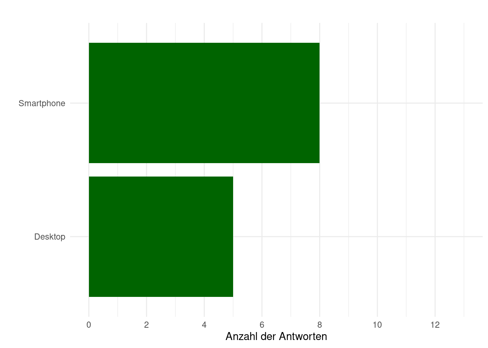
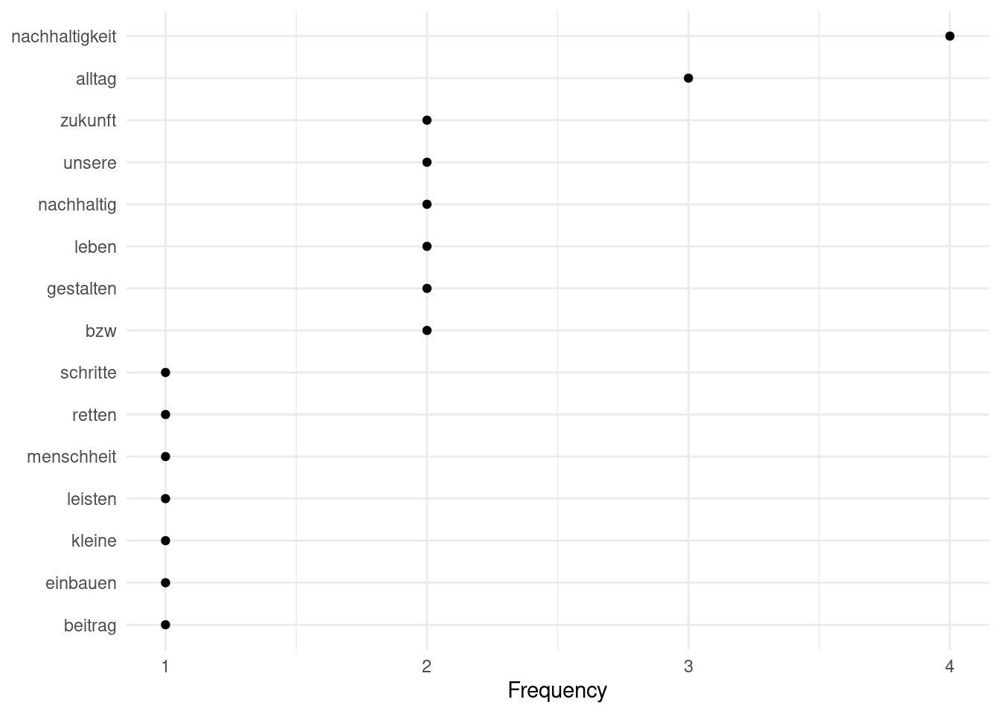
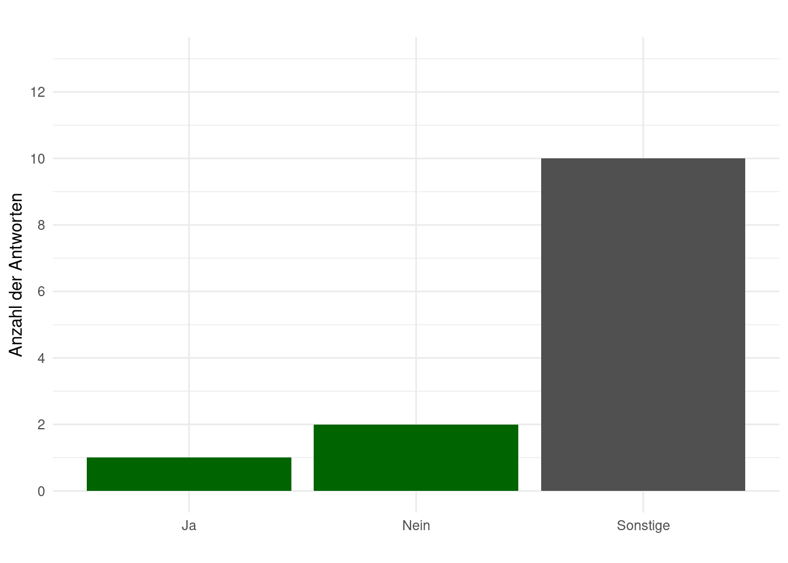
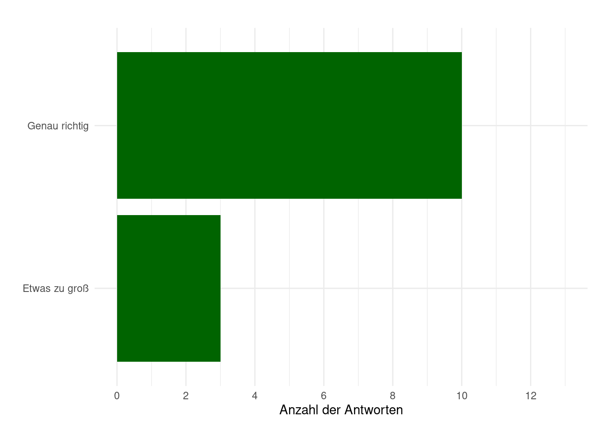
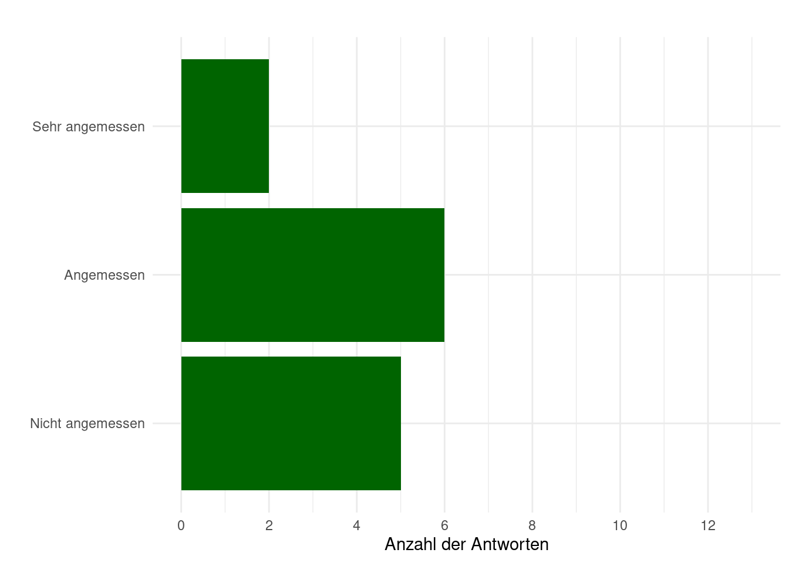
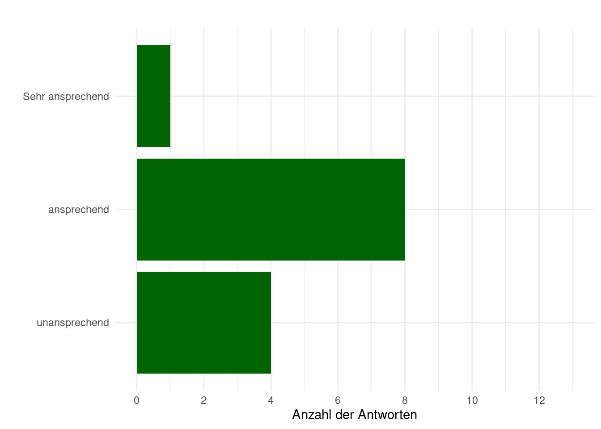
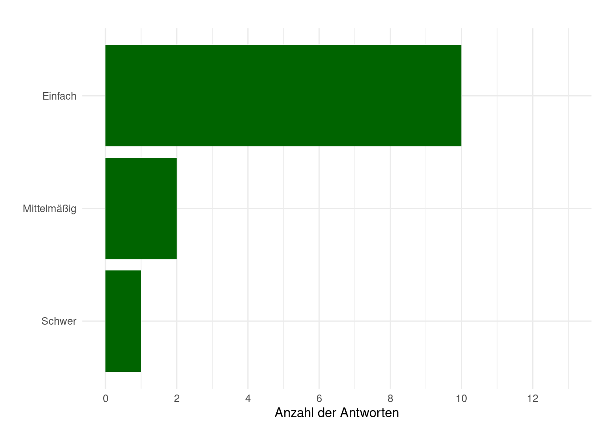
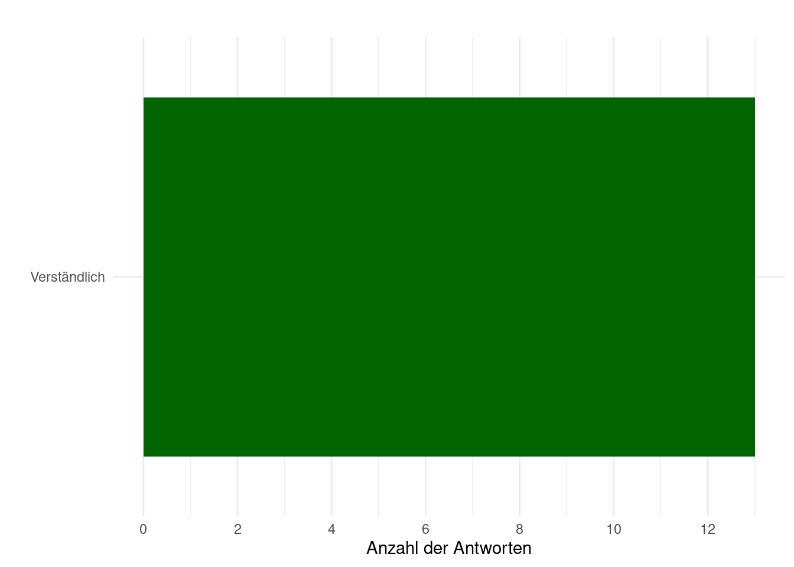
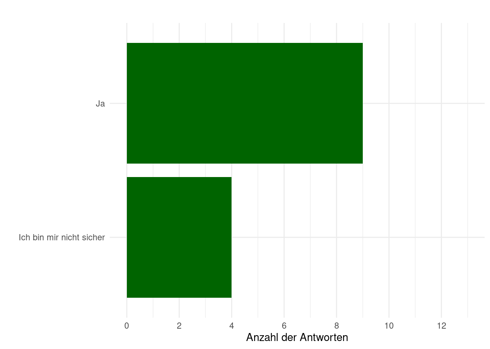

Report
Usability Website Survey
Endgerät
[Kategorische Frage mit 3 Antwortmöglichkeiten]
Gib an, welches Endgerät du verwendet hast. (Desktop, Tablet, Smartphone)
Interessen Nachhaltigkeit
[Offene Frage]
Was interessiert dich bezüglich Nachhaltigkeit?
- Die Zukunft der Menschheit retten
- Nachhaltigkeit im Alltag
- Welchen Beitrag kann ich selbst leisten?
- Wie man es selbst in seinen Alltag einbauen kann (selbst kleine Schritte)
- nachhaltiges Einkaufen
- Wie kann ich mein Leben und das Leben anderer nachhaltig gestalten?
- Gebäude / Immobilien
- Inwieweit es möglich ist, unsere Lebensweise nachhaltig zu gestalten bzw. wie praktikabel diverse nachhaltige Alternativen sind
- Wege Nachhaltigkeit in dem Alltag zu integrieren, Forschungen zu Nachhaltigkeit
- Bauwesen
- Umwelt Themen
- Die Verbesserung der Bedürfnisse dass die Möglichkeiten zukünftiger Generationen nicht eingeschränkt werden
- Die wichtigen Aspekte die unsere ganze Zukunft prägen, bzw wie wir die Versäumnisse in der Vergangenheit durch mehr Nachhaltigkeit aufarbeiten können 
Neues Interesse geweckt
[Offene Frage]
Konnten die Inhalte der Webseite „Haus der Nachhaltigkeit“ dein Interesse für bisher Unbekanntes wecken? Falls ja, welche?

Sonstige:
- JLU Markt der Möglichkeiten, Refillstationen
- NPOs, Möglichkeiten selbst aktiv zu werden
- Nachhaltigkeit innerhalb von Religion
- Teilweise, bezüglich Ernährung und Kleidung
- Da viele Inhalte noch in Arbeit sind, ist bisher nichts speziell Unbekanntes aufgefallen
- Besonders die Apps für den Alltag sowie die Erklärungen für verschiedene Label waren sehr informativ
- Themen wie Ernährung
- Das die Nachhaltigkeit in der Bildung miteinbezogen werden sollte
- Nein, liegt aber ehr daran das ich in dem Thema schon Recht Informiert bin Schrift
[Likertskala mit 5 Antwortmöglichkeiten]
Wie empfindest du die Schriftgröße der Website?

[Offene Frage]
Warum wirkt die gewählte Schriftart für dich nicht bis gar nicht angemessen?
- Zu viel ... Überflutung Farben
[Likertskala mit 4 Antwortmöglichkeiten]
Wie wirkt das gewählte Farbdesign der Webseite auf dich?

[Offene Frage]
Warum wirkt das gewählte Farbdesign für dich nicht bis gar nicht angemessen?
- Vllt. Kultur u. Unternehmen Bubble nicht beide in rot
- Farbschema ist nicht gut erkennbar
- Zu viel .... Überflutung (was ist nun wichtig und was nicht?)
- Mehr grün Optische Gestaltung Allgemein
[Likertskale mit 4 Antwortmöglichkeiten]
Wie ansprechend wirkt die optische Gestaltung der Webseite auf dich?

Bedienung der Website
[Likertskala mit 3 Antwortmöglichkeiten]
Beurteilen Sie wie die Website zu bedienen ist:

[Offene Frage]
Was könnte sich an der Bedienung der Website noch verbessern?
- wirkt unsortiert und ohne konzept
- weniger sackgassen xD
- Bis jetzt angenehm
- Eventuell die Navigationselemente in der Navigationsbar nicht übereinanderstapeln, sondern alle in einer Linie darstellen (Lebensstile)
- bessere Einleitung was es alles auf der Webseite gibt
- Gibt nichts auszusetzen
- Wichtiges hervorheben und unwichtig schwarz weiß
- Verwirrend ist nur, dass einige Buttons/Pfeile nirgends hinführen. Vielleicht liegt es daran, dass die Seite noch in Arbeit ist?
- Buttons sind unterschiedlich groß, vereinzelnd sind Tippfehler zu finden
- Bessere Gliederung
- Nichts alles ist so gut
- Nichts
- Weniger Block Text, mehr Bilder/Grafiken/Deko außer man ist bereits in einem bestimmten Artikel dann kann es natürlich auch Block Texte rauslaufen. Informationen auf der Website
Verständlichkeit
[Likertskala mit 3 Antwortmöglichkeiten]
Beurteilen Sie wie die Website zu bedienen ist:

[Offene Frage]
Welche Inhalte der Webseite bedürfen besserer Erklärung?
- warum muss ich das feld ausfüllen?? vorallem das menü bedarf besserer erklärung
- Evtl. mehr auf Bildung - Nachhaltigkeit sowie Wirtschaft - Nachhaltigkeit eingehen
- Warum ist esoterisch als Punkt bei einem Label für Lebensmittel relevant?
- Der architektonische Entwurf Vertrauen
[Likertskala mit 3 Antwortmöglichkeiten]
Vertrauen Sie den Informationen auf der Website?

[Offene Frage]
Was brauchst du, um den Inhalten der Webseite vertrauen zu können?
- Seriösität
- seriöse Partner
- Mir gefällt, dass genügend Quellen angegeben werden. Darauf zu achten, dass konsistent Quellen angegeben werden, macht die Seite vertraulich (evtl. mit Links zu den Quellen)
- Quellenverzeichnis
- Wissenschaftlich belegte Fakten
- Seriösität und kein kunterbunt
- Mehr Quellenangaben
- Angemessene Ausdrucksweise, seriöser Seiten Aufbau, viele Verweise, vertrauensvolle Kontakt Angaben
- Übersichtlichkeit
- Quellenverweise,
- Ich habe die Quellen nicht näher überprüft, das ist natürlich ein wichtiger Schritt der bei jeder Website wichtig ist, zumindest solange sie nicht Etabliert ist. Offene Schlussfrage
[Offene Frage]
Wie hast du gesucht und was erschwerte die Suche?
- besser sortieren
- Erklärung was Nachhaltigkeit ist und meint etwas ausformulieren, Nachhaltigkeit als Problem verstehen - nicht als (Wunder-)Lösung
- Vllt. gleiche Bildergröße auf der Startseite und teilweise sind kleine Bilder oder Logos sehr gequetscht neben dem Text